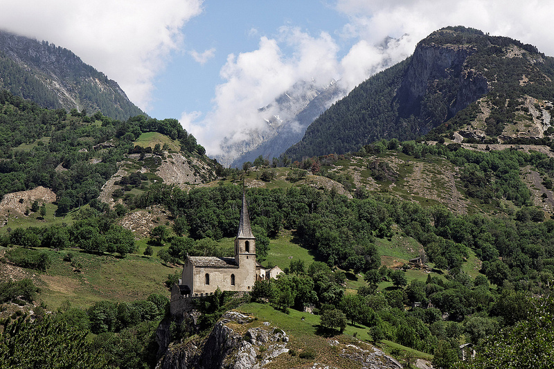

Być snem niczyim
„Pragnę, by mnie pochowano na wysoko położonym cmentarzu obok starego kościoła w Raron. Tam, w jego otoczeniu, po raz pierwszy odczułem wiatr i światło tego krajobrazu” — napisał Rilke na kartach swego testamentu.
Poeta pozostawił również szczegółowy opis swego nagrobka. Życzył sobie, by na kamiennej steli wyryto jedynie herb, nazwisko, a poniżej epitafium, które do dziś zachwyca i zastanawia swoją wieloznacznością:
Różo, och, czysta sprzeczności, rozkoszy,
być snem niczyim pod tak wielu
powiekami.
A zatem snem niczyim… Czyż można bowiem zaskarbić sobie czyjś sen? Ostatecznie, nieodwołalnie? Istnieć nieskończenie, nawet pod miriadami wpółprzymkniętych powiek? Dojrzewamy, poddani pragnieniu, by móc z czystym sercem powiedzieć: Wszystko urasta we mnie do znaczenia, dzięki tobie…
Epitafium w przekładzie M. Jastruna.